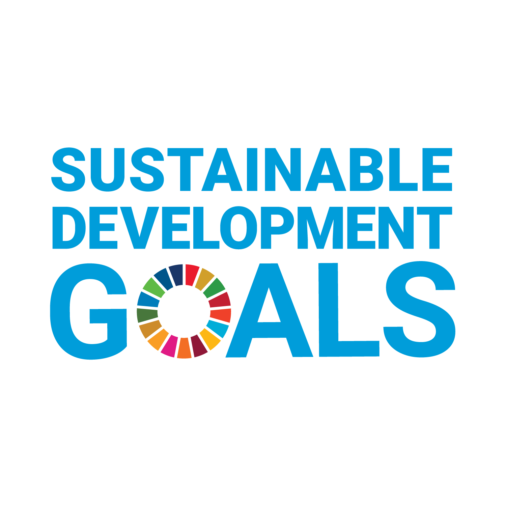
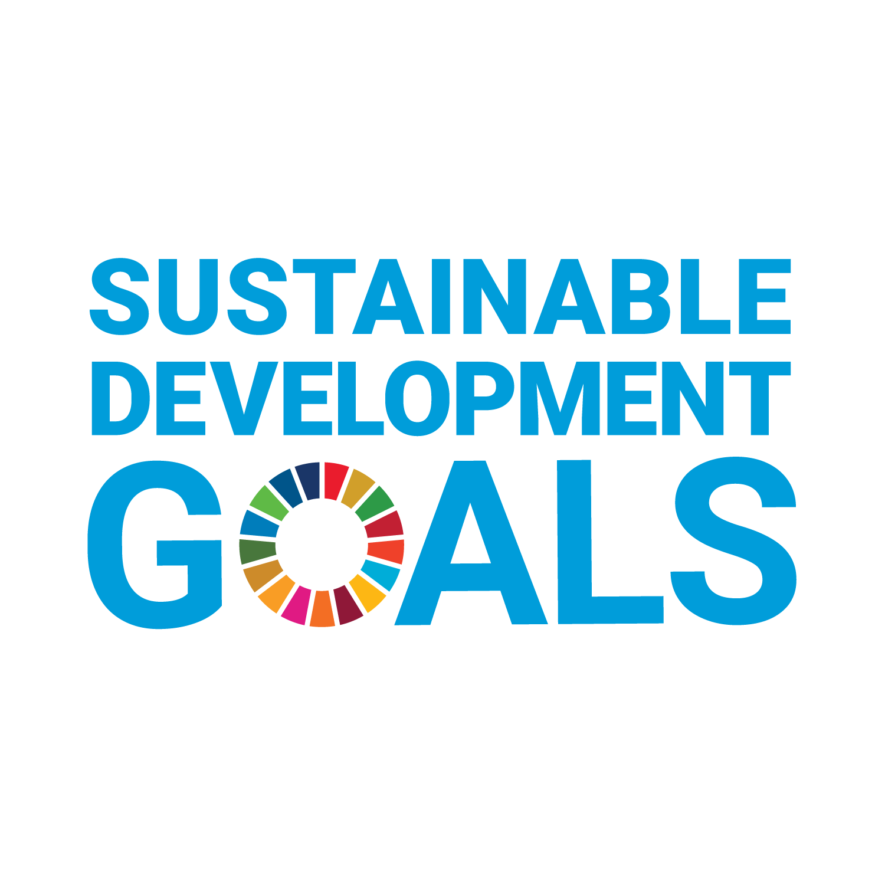

Baeru Coast Clear
OCEAN BOUND PLASTIC MITIGATION
ZERO WASTE | CIRCULAR ECONOMY | COASTAL LIVELIHOODS
Solid Waste Management
We provide end-to-end waste management services based on the principles of circular economy. We handle waste sustainably and responsibly for bulk waste generating organizations and institutions.
Coast Clear
The increasing amount of plastic pollution is a serious threat to marine life as well as to coastal communities. Our mission is to make india's coastal regions resilient through mitigation of ocean plastic pollution, creation of circular economy and generation of dignified livelihoods for coastal and rural women.
At the Sustainable Blue Economy Investment Forum in Cascais, Portugal, a special UN Ocean Conference event, Baeru Environmental Services joined 150 major companies in signaling their commitment to a healthy ocean by signing onto the UN Global Compact Sustainable Ocean Principles.
We make waste management practices sustainable and economically beneficial for rural communities while empowering women to turn waste into wealth in a meticulously managed process driven by data and technology.
Enabling Women
Our mission is to leverage design, technology, lingual and regional context to achieve climate and gender justice. We are achieving this through a two-pronged approach of climate education and economic empowerment of rural women. Our programs are action-driven and we give local communities - particularly, women and youth - the platform and voice to impact their world.
Climate Action
We are a group of diverse individuals who want to foster dialogue and work towards climate action, civic awareness, and a circular economy in the local communities of Karnataka. We believe that weaving sustainability into the very fabric of development is the key to building a green and livable future. Making climate action accessible and achievable for second and third tier cities can spark significant community-wide social change that is meaningful.
Circular Economy
Waste managed at source becomes a resource. To close the loop in a circular economy, the waste materials our women collect are segregated based on reusability, washed, dried and then transformed into functional products. We work with women from difficult economic backgrounds and differently-abled persons to help the community while closing this loop.
Sustainability
We work primarily with these women to make a sustainable lifestyle more accessible to them and instill community-wide change. This helps the movement gain momentum by empowering women and bolstering their position as decision makers, and also increasing their employability and therefore financial security.


 
